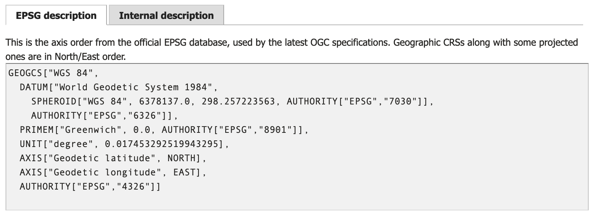
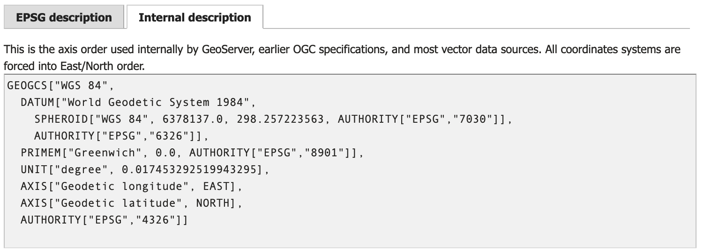
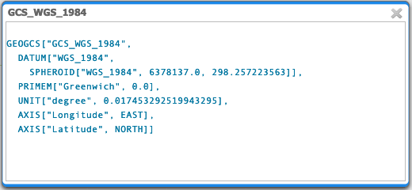
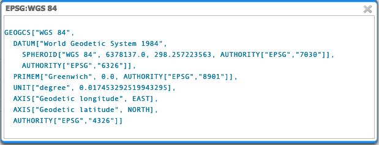
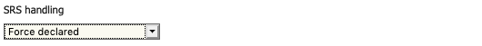

Axis ordering
The definition of a spatial reference system includes an indication of the axis order used to interpret the coordinates. There are a number of projected spatial reference systems defined in north/east order in the formal EPSG definition, but are interpreted as being in east/north order by earlier versions of the WFS protocol.
WFS 1.0.0: Provides geographic coordinates ineast/northand may not be trusted to respect the EPSG definition axis order.WFS 1.1.0: Respects the axis order defined by the EPSG definition.WFS 2.0.0: Respects the axis order defined by the EPSG definition.
Forcing content into east/north order was intended to be easier for developers where computer displays are defined with an x/y order. However this decision has introduced no end of confusion, and was corrected in later versions of WFS.
Note
Some spatial reference systems, for example polar stereographic, do not have an east or west as they have a pole in the middle of the axis.
These differences may cause difficulties when clients switch between different WFS versions. To minimize confusion and increase interoperability, GeoServer has adopted the following guidelines when specifying spatial reference systems to avoid ambiguity.
Representation Axis order Interpretation
EPSG:4326 longitude/latitude assumption
http://www.opengis.net/gml/srs/epsg.xml#xxxx longitude/latitude strict
urn:x-ogc:def:crs:EPSG:xxxx latitude/longitude strict
urn:ogc:def:crs:EPSG::4326 latitude/longitude strict
SRSList Axis Order
To compare the spatial reference system definition for EPSG:4326:
-
Navigate Demos → SRS List page and search for
4326. -
Compare the formal
EPSGdefinition ofWGS84:
WGS84 EPSG definition -
With the internal definition of
WGS84:
WGS84 Internal definition
The same approach can be used to check the definition of any spatial reference system supported by GeoServer.
Note
The formal EPSG definition provides the axis-order used to interpret coordinate values. GeoServer uses an internal representation that does not always respect the EPSG provided axis order.
In the example above EPSG:4326 is defined with a north/east axis order, while the internal representation has east/north order.
The startup option -Dorg.geotools.referencing.forceXY=true is used to configure GeoServer to prefer an internal representation in east/north axis order. We recommend the default value of true to match a wide range of clients that make this assumption.
Layer Axis Order
The default data directory includes the following dataset illustrating this challenge:
-
shapefile/states.shp`: Data stored in x/y order:MULTIPOLYGON (((-121.664154 38.169369,-121.781296 38.066856, ... -
shapefiles/states.prj:GEOGCS["GCS_WGS_1984",DATUM["WGS_1984",SPHEROID["WGS_1984",6378137,298.257223563]],PRIMEM["Greenwich",0],UNIT["Degree",0.017453292519943295]]Published as
topp:stateswith Spatial Reference SystemEPSG:4326.
To review how this layer has been published:
-
Navigate to the Edit Layer page for
topp:states. -
Locate Native SRS and click on the GCS_WGS_1984 link to show how GeoServer interpreted the
PRJfile above.The
PRJdid not provide an axis-order and GeoSever has filled in an assumption. This describing the data inx/yorder which matches our data and we could use it unmodified.
Native SRS for topp:states -
Locate Declared SRS and click on EPSG:WGS 84... link to see the definition used to publish this content.
This is the internal definition of
EPSG:4326as shown in the SRSList above, which also describes the data inx/yorder matching our data. This definition provides slightly more readable names along with additionalAUTHORITYinformation that may be helpful to client applications.
Declared SRS for topp:states -
The SRS Handling is set to
Force declaredto completely ignore the provided Native SRS definition and use the Declared SRS.
Force declared SRS handling for topp:states
WFS 1.0 Axis Order
GetCapabilities describes topp:states using:
http://localhost:8080/geoserver/ows?service=wfs&version=1.0.0&request=GetCapabilities
<FeatureType><Name>topp:states</Name>
<Title>USA Population</Title>
<Abstract>This is some census data on the states.</Abstract>
<Keywords>census, united, boundaries, state, states</Keywords>
<SRS>EPSG:4326</SRS>
<LatLongBoundingBox minx="-124.731422" miny="24.955967" maxx="-66.969849" maxy="49.371735" />
</FeatureType>
WFS 1.0 describes the latitude / longitude bounds with the understanding that you will associate minx and maxx with longitude, and also miny and maxy with latitude.
WFS 1.0 GetFeature request defaults to GML2 output, and the default EPSG:4326 spatial reference system used to publish the layer:
-
WFS 1.0 Default: http://localhost:8080/geoserver/ows?service=WFS&version=1.0.0&request=GetFeature&typeName=topp%3Astates&featureId=states.1
The GML2 output uses
http://www.opengis.net/gml/srs/epsg.xml#4326reference, with data in x/y order:
WFS 1.0 output format GML3
-
GML3.1 (default
EPSG:4326):GML3 output uses
http://www.opengis.net/gml/srs/epsg.xml#4326reference, with data in x/y order: -
GML3.1 reproject to
EPSG:4326GML3 output uses
http://www.opengis.net/gml/srs/epsg.xml#4326reference, with data in x/y order: -
GML 3.1 reproject to
urn:x-ogc:def:crs:EPSG:4326GML3.1 output using
urn:x-ogc:def:crs:EPSG:4326reference and data in y/x order:
WFS 1.0 output format GML32
-
GML3.2:
The GML32 output uses
http://www.opengis.net/gml/srs/epsg.xml#4326reference, with data in x/y order: -
GML3.2 reproject to
EPSG:4326:The GML32 output uses
http://www.opengis.net/gml/srs/epsg.xml#4326reference, with data in x/y order: -
GML3.2 reproject to
urn:x-ogc:def:crs:EPSG:4326:GML3.2 output using
urn:x-ogc:def:crs:EPSG:4326reference and data in y/x order:
WFS 1.1 Axis Order
GetCapabilities describes topp:states using:
http://localhost:8080/geoserver/ows?service=wfs&version=1.1.0&request=GetCapabilities
<FeatureType>
<Name>topp:states</Name>
<Title>USA Population</Title>
<Abstract>This is some census data on the states.</Abstract>
<ows:Keywords>
<ows:Keyword>census</ows:Keyword><ows:Keyword>united</ows:Keyword><ows:Keyword>boundaries</ows:Keyword><ows:Keyword>state</ows:Keyword><ows:Keyword>states</ows:Keyword>
</ows:Keywords>
<DefaultSRS>urn:x-ogc:def:crs:EPSG:4326</DefaultSRS>
<ows:WGS84BoundingBox>
<ows:LowerCorner>-124.731422 24.955967</ows:LowerCorner>
<ows:UpperCorner>-66.969849 49.371735</ows:UpperCorner>
</ows:WGS84BoundingBox></FeatureType>
WFS 1.1 describes the WGS84BoundingBox as a lower and upper corner in x/y order.
Warning
This combination is inconsistent with DefaultSRS definition and the LowerCorner and UpperCorner coordinate order and may confuse client applications.
The result matches the WFS 1.1.0 Implementation Specification GetCapabilities examples.
WFS 1.1 GetFeature request defaults to GML3 output, and the default urn:x-ogc:def:crs:EPSG:4326 spatial reference system used to publish the layer:
-
WFS 1.1 Default:
The GML3.1 output uses
urn:x-ogc:def:crs:EPSG:4326reference, with data in y/x order: -
WFS 1.1 reproject to
EPSG:4326:The GML3.1 output uses
http://www.opengis.net/gml/srs/epsg.xml#4326reference, with data in x/y order:<gml:MultiSurface srsName="http://www.opengis.net/gml/srs/epsg.xml#4326"> <gml:surfaceMember> <gml:Polygon> <gml:exterior> <gml:LinearRing> <gml:posList> -88.071564 37.51099 -88.087883 37.476273Note
The
srsNameandposListcoordinate order are consistent.This approach can be used to force x/y order.
-
WFS 1.1 reproject to
urn:x-ogc:def:crs:EPSG:4326:The GML3.1 output uses
http://www.opengis.net/gml/srs/epsg.xml#4326reference, with data in y/x order:
WFS 1.1 output format GML2
-
GML2:
GML2 output uses
http://www.opengis.net/gml/srs/epsg.xml#4326reference, with data in y/x order: -
GML2 reproject to
EPSG:4326:GML2 output uses
http://www.opengis.net/gml/srs/epsg.xml#4326reference, with data in x/y order:<gml:MultiPolygon srsName="http://www.opengis.net/gml/srs/epsg.xml#4326"> <gml:polygonMember> <gml:Polygon> <gml:outerBoundaryIs> <gml:LinearRing> <gml:coordinates decimal="." cs="," ts=" "> -88.071564,37.51099 -88.087883,37.476273Note
The
srsNameandposListcoordinate order are consistent.This approach can be used to force x/y order.
WFS 1.1 output format GML3
-
GML3:
GML3.1 output uses
http://www.opengis.net/gml/srs/epsg.xml#4326reference, with data in y/x order: -
GML3 reproject to
EPSG:4326:GML3.1 output uses
http://www.opengis.net/gml/srs/epsg.xml#4326reference, but has changed the data to x/y order:<gml:MultiSurface srsName="http://www.opengis.net/gml/srs/epsg.xml#4326"> <gml:surfaceMember> <gml:Polygon> <gml:exterior> <gml:LinearRing> <gml:posList> -88.071564 37.51099 -88.087883 37.476273Note
The
srsNameandposListcoordinate order are consistent.This approach can be used to force x/y order.
-
GML3 reproject to
urn:x-ogc:def:crs:EPSG:4326GML3.1 output using
urn:x-ogc:def:crs:EPSG:4326reference and data in y/x order:<gml:MultiSurface srsName="http://www.opengis.net/gml/srs/epsg.xml#4326"> <gml:surfaceMember> <gml:Polygon> <gml:exterior> <gml:LinearRing> <gml:posList> -88.071564 37.51099 -88.087883 37.476273Note
The
srsNameandposListcoordinate order are consistent.This approach can be used to force x/y order.
WFS 1.1 output format GML32
-
GML3.2:
The GML32 output uses
http://www.opengis.net/gml/srs/epsg.xml#4326reference, with data in y/x order: -
GML3.2 reproject to
EPSG:4326:The GML32 output uses
http://www.opengis.net/gml/srs/epsg.xml#4326reference, with data in x/y order: -
GML3.2 reproject to
urn:x-ogc:def:crs:EPSG:4326:GML3.2 output using
urn:x-ogc:def:crs:EPSG:4326reference and data in y/x order:
WFS 2.0 Axis Order
GetCapabilities describes topp:states using:
http://localhost:8080/geoserver/ows?service=wfs&version=2.0.0&request=GetCapabilities
<FeatureType>
<Name>topp:states</Name>
<Title>USA Population</Title>
<Abstract>This is some census data on the states.</Abstract>
<ows:Keywords>
<ows:Keyword>census</ows:Keyword><ows:Keyword>united</ows:Keyword><ows:Keyword>boundaries</ows:Keyword><ows:Keyword>state</ows:Keyword><ows:Keyword>states</ows:Keyword>
</ows:Keywords>
<DefaultCRS>urn:ogc:def:crs:EPSG::4326</DefaultCRS>
<ows:WGS84BoundingBox>
<ows:LowerCorner>-124.731422 24.955967</ows:LowerCorner>
<ows:UpperCorner>-66.969849 49.371735</ows:UpperCorner>
</ows:WGS84BoundingBox>
</FeatureType>
WFS 2.0 describes the WGS84BoundingBox as a lower and upper corner in x/y order.
Warning
This combination is inconsistent with DefaultSRS definition and the LowerCorner and UpperCorner coordinate order and may confuse client applications.
The result matches the WFS 2.0 GetCapabilities examples.
WFS 2.0 GetFeature request defaults to GML3.2 output, and the default urn:ogc:def:crs:EPSG::4326 spatial reference system used to publish the layer:
-
WFS 2.0 Default:
The GML3.2 output uses
urn:ogc:def:crs:EPSG::4326reference, with data in y/x order: -
WFS 2.0 reproject to
EPSG:4326:The GML3.2 output uses
http://www.opengis.net/gml/srs/epsg.xml#4326reference, with data in x/y order: -
WFS 2.0 reproject to
urn:ogc:def:crs:EPSG::4326http://localhost:8080/geoserver/ows?service=WFS&version=2.0.0&request=GetFeature&typeNames=topp%3Astates&featureId=states.1&srsName=urn:ogc:def:crs:EPSG::4326The GML3.2 output uses
urn:ogc:def:crs:EPSG::4326reference, with data in y/x order:
WFS 2.0 output format GML2
-
GML2:
-
GML2 reproject to
EPSG:4326:<gml:MultiPolygon srsName="http://www.opengis.net/gml/srs/epsg.xml#4326"> <gml:polygonMember> <gml:Polygon> <gml:outerBoundaryIs> <gml:LinearRing> <gml:coordinates decimal="." cs="," ts=" "> -88.071564,37.51099 -88.087883,37.476273Note
The
srsNameandposListcoordinate order are consistent.This approach can be used to force x/y order.
-
GML2 reproject to
urn:x-ogc:def:crs:EPSG:4326:
WFS 2.0 output format GML3
-
GML3:
-
GML3 reproject to
EPSG:4326:<gml:MultiSurface srsName="urn:x-ogc:def:crs:EPSG:4326"> <gml:surfaceMember> <gml:Polygon> <gml:exterior> <gml:LinearRing> <gml:posList> -88.071564 37.51099 -88.087883 37.476273Warning
This combination is inconsistent between
srsNameandposListcoordinate order and may confuse applications expecting a valid GML3 document.This approach can be used to force x/y order.
-
GML3 reproject to
urn:x-ogc:def:crs:EPSG:4326:
WFS 2.0 output format GML32
-
GML32:
-
GML32 reproject to
EPSG:4326:<gml:MultiSurface srsName="urn:ogc:def:crs:EPSG::4326" gml:id="states.1.the_geom"> <gml:surfaceMember> <gml:Polygon gml:id="states.1.the_geom.1"><gml:exterior> <gml:LinearRing> <gml:posList> -88.071564 37.51099 -88.087883 37.476273Warning
This combination is inconsistent between
srsNameandposListcoordinate order and may confuse applications expecting a valid GML3 document.This approach can be used to force x/y order.
-
GML32 reproject to
urn:x-ogc:def:crs:EPSG:4326: